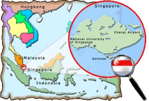

Jason C. alias
https://github.com/
I am situated at 192.166.246.105, which is here!
This is the last surviving Suzuki SR42B DR800 single cylinder twin carburetor dual sport motorcycle in Singapore. It faces extinction risk due to ever tightening vehicle inspection regulations. God speed the Desert Express.
This is my beautiful wife and kids. I spend too much time on them and not enough on the Desert Express.
I have a hardware and systems Engineering background. In this world of remote and offsite work, it helps to consider
After performing a SWOT analysis on my family and myself, I would love to be able to develop web and mobile applications as an additional
I am
Design Thinking, Cloud and Cybersecurity practitioner
Completion of coursework for ECCouncil CEHv22, knowledge of web application vulnerabilities
Front- and Backend Development